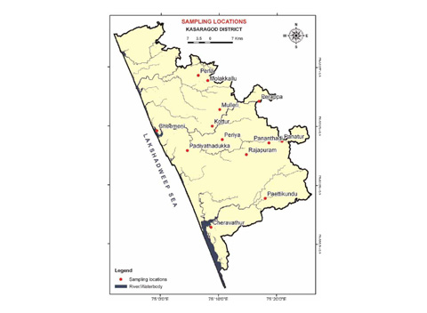

Kasaragod District
Kasargod is the northernmost district of Kerala State of India. The district is known for its coir and hand loom industries. The district has a coastline of around 293 kilometers and that why the livelihood of Kasargod people mainly depends on fisheries.
The district is popular with the forts, rivers, hillocks, beaches and shrines. The district is marked off from the adjoining areas outside the State by the Western Ghats which run parallel to the sea and constitute an almost continuous mountain wall on the eastern side.
Map of Kasaragod
Details
| Area | 1,992 km2 |
| Population | 12,03,342 |
| Languages | Malayalam, English, Tulu, Kannada, Tamil |
| Literacy | 85.07% |
| Density | 604/Sq.Km |
History
Arabs called Kasaragod as Harkwilla. Kasaragod was an important tradin center of Kerala. Kasargod was part of the Kumbala Kingdom in which there were 64 Tulu and Malayalam villages.During the decline of that empire in the 14 century, the administration of this area was vested with the Ikkeri Naikans. They continued to be the rulers till the fall of the Vijayanagar empire in 16th century. Kasargod taluk came into being when Bekal taluk was included in the Madras presidency on April 16, 1882.K.P.Keshva Menon made many efforts which resulted to Kasargod became part of Kerala following the reorganization of states and formation of Kerala in November 1,1956.
Geography
Kasaragod is marked by Western Ghats which run parallel to the sea and constitute an almost continuous mountain wall on the eastern side.The coastline is fringed with low cliffs alternating with stretches of sand.The landscape is dominated by the characteristic coconut palms accompanying rolling hills and streams flowing into the sea.
Climate
Climate here in Kasaragod District is warm, humid and tropical.The average maximum temperature is 31.2 degree celsius and minimum is 23.6 degree celsius. March to may are hot season while December and January are the coolest months here.
Art & Culture
The rich cultural heritage of kasaragod is reflected in the range of art forms that took form in this region. The spectacular pageant of Theyyam the energy and vibrancy of Yakshgana, Kambala (buffallo race) and Cock fight all compose a symphonic melody out of this great land.
Kasargod is a land of different languages. The languages without script are also used here. Though the people speak different languages there is no barrier on the cultural unity. Mosques, Temples and Churches stand side by side as symbols of communal cohesion.
Places to visit
Getting here
By Road - NH17 passes through this district and passes through its towns Trikaripur, Cheruvathur, Nileshwar, Kanhangad, Kasargod, Kumbla, Uppla, Manjeshwar and enters Karnataka state at Thalappadi to Managlore. State highways connect it to other cities of Kerala.
By Rail - Along with coastline of the district railway lines passes , Kasaragod Railway Station is the major station in the Shoranur – Mangalore Section of the Southern Railways. Almost all trains coming to southern India halts here.
By Air - Kasaragod has no airport in the district. Mangalore International Airport is located about 70 km from the Kasaragod town. Calicut International airport is about 200 km from the City.